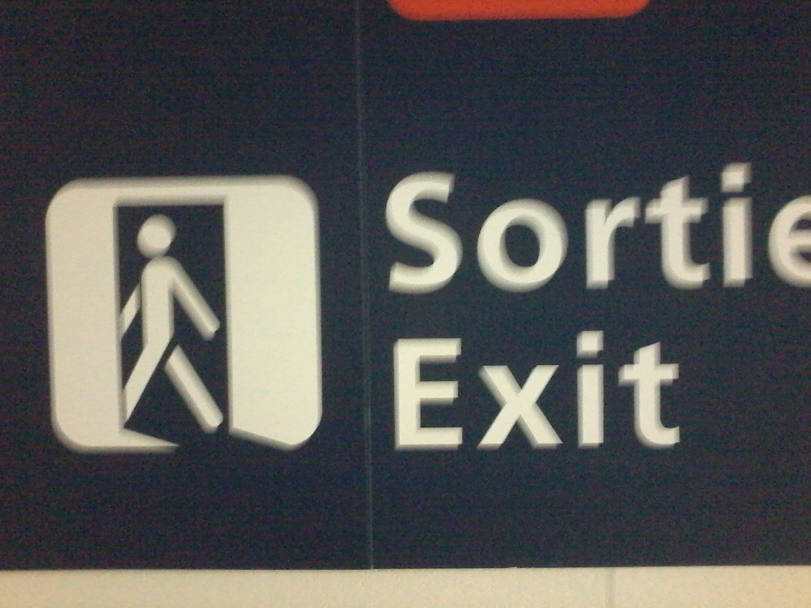

Once upon a time, the exit sign featured an open door. How to make sure the door is open, or that it is a door at all? The original idea was to have light entering the scene from the door. With time, the represented light has consolidated into an icon. Eventually, it has become dark light, or maybe a shadow. One wonders how much creativity is allowed in iconic signage. The golden rule seems to be: be as conservative as possible.
 Orly airport, Dec 2017. Image Credit, RCPrevious Essay
Next Essay